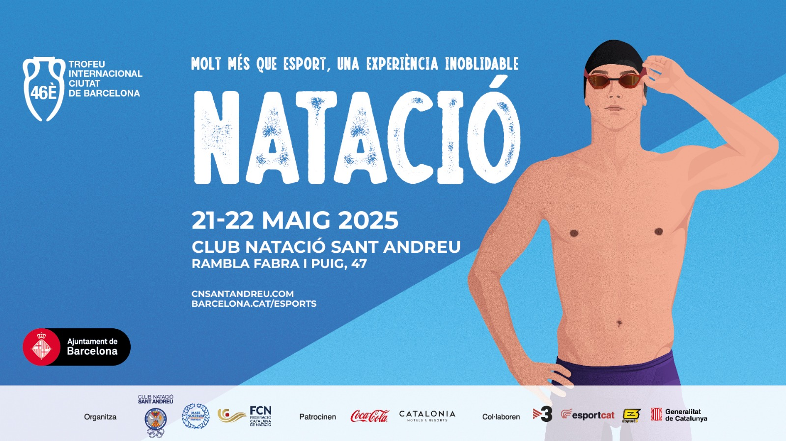

Pàgina transcendental
Aquesta és la meva primera pàgina web.
Canvi des de dev per fer proves.
El meu diari
2025-05-14
Avui començo el meu petit diari digital inspirat en l'Amstrad CPC 6128!
2025-05-13
He après a fer servir git per gestionar els meus projectes.
Foto retro!
2025-05-15 18:30
Avui he afegit una foto retro!

Avui rikitown no retro!
Avui riko!